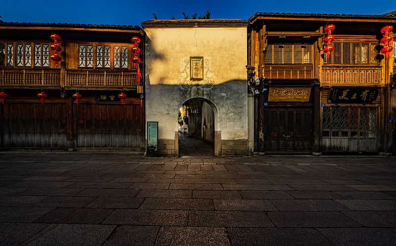
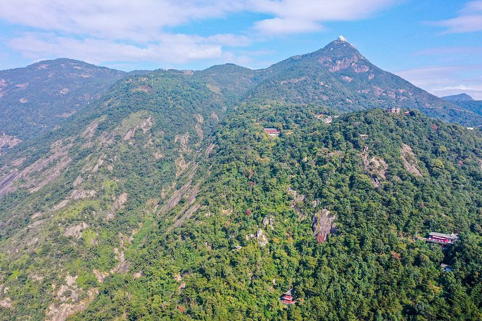

FUZHOU · FUJIAN · CN
福州 3 日
榕树蔽城 · 有福之州
三坊七巷里泡茶听闽剧，鼓山涌泉寺看江海，烟台山的老洋房藏着开埠记忆——一座泡在茶香与榕荫里的慢城。
📍 福建福州
🗓 建议 2–3 天
🧭 老城+山水
三坊七巷 · 鼓山 · 烟台山 · 西湖公园


春秋最舒服（3-5月、9-11月）；夏季湿热心闷，注意防暑。
地铁+公交便利；去鼓山可坐地铁到鼓山站再转车/步行。
三坊七巷、西湖免费；鼓山、涌泉寺收门票。
闽人好茶也爱泡温泉，行程松点找个茶馆/温泉馆歇脚最是福州味。
住坊巷附近最方便，步行逛古城、西湖都在半小时兜底内。
💡 2 晚足以覆盖精华；时间充裕再住一晚感受夜生活。
WorldStip 旅行小册子 · 福州 3 日 · WEAR A STAMP · FUZHOU 2026